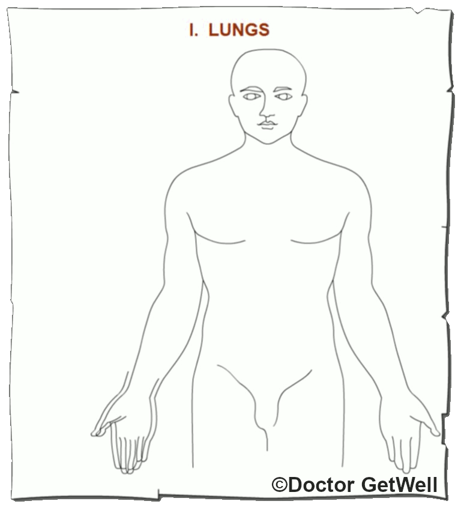

Acupuncture
Definition:
Acupuncture is a method of prevention, correction and treatment of a disease, illness, injury or pain by encouraging the body to promote natural healing and improve functioning. This objective is implemented by the stimulation of certain biologically active points on the surface of the body (acupuncture points).
These strategic points can be stimulated by the insertion of acupuncture needles or by non-invasive techniques and other means of physical stimulation. A key feature of acupuncture as a kind of medical intervention is that there is no administration of any chemical substances in any form or delivery system.
Learn About:
Traditional Acupuncture - Regular Channels:
According to Chinese medicine, the invisible Qi circulates along a system of conduits.
They form a complex network of main channels, minor capillaries, and collaterals.
There are 14 main interconnected pathways called "channels" through which this energy circulates. In total,
there are about 400 acupuncture points. Each channel is intimately connected with one of
the viscera of the body, and each manifests its own characteristics and bears the name of
the organ related to it. For example, "liver channel", "heart channel", etc.
I - Lungs
Greater Yin (陰)
Related: Arm
Element: Metal (金)
Ventral
Descending
Acup Points: 11

I - Lungs
II - Large Intestine
III - Stomach
IV - Spleen & Pancreas
V - Heart
VI - Small Intestine
VII - Urinary Bladder
VIII - Kidney
IX - Pericardium
X - Triple Warmer
XI - Gallibladder
XII - Liver
XIII - Du-Mai Governing Vessel
XIV - Ren Conventional Vessel
Copyright Policy
Please, feel free to copy and use this material with the proper reference. This courtesy is expected. Thank you.
This page last updated: 30-May-2024